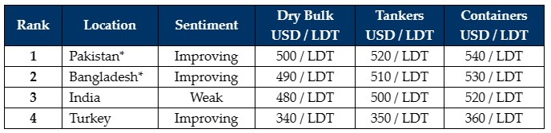

inWeekly Demolition Reports15/01/2024

Anxiety and uncertainty reign across the Ship-owning community at large, especially for thosewith units trading in, or simply passing through the shipping lanes that are currently besieged by Houthi Rebel attacks in the Red Sea. This is invariably resulting in many Owners’ avoiding a voyage via the (Suez) Canal altogether; electing instead to sail around the Cape and subsequently increase voyage times, costs, and inadvertently assist global inflation. The U.K. & the U.S.A. have however, swiftly responded by targeting terror sites in the area, as the ongoing situation in the Middle East continues to unravel and escalate.
On the Ship Recycling front, off of the back of the first set of 2024 L/C approvals that saw a subsequent increase in the number of inquiries emerging from both Bangladeshi and Pakistani markets this week, it seems there are still signs of (recycling) life in the sub-continent markets.
Recently concluded Bangladeshi elections have also confirmed that the ruling party continues to maintain power, despite strong & ongoing opposition that has (reportedly) maintained the status quo on the ongoing riots, strikes, and political strife that has beset much of the country. In fact, in the run up to the elections, several polling stations and even a train were reportedly torched by violent party activists, so tainted have the elections believed to have been. Notwithstanding, given that the results are now out, much hope remains that things will settle sooner (rather than later).
Elections are also to conclude in Pakistan & India in the coming months and in India as well, Prime Minister Modi’s party is expected to maintain its much-deserved command over a majority of the incoming votes for another 5-year term, as India continues to compete incredibly at a global level, on recent economic fronts and ongoing scientific endeavors / achievements. Finally, the Turkish market in the West end remained quiet as ever, despite the Lira blowing past TRY 30 this week.
Overall, amidst all of the ongoing uncertainty & turmoil that is currently unfolding across much of the Middle East, Chinese New Year holidays hopefully bring some much-needed hope & respite to the rest of the world. Coupled with the recent cooling of global freight rates, a marked increase in the supply of recycling candidates towards the end of Q1 2024 is expected to hit the industry. As such, the need of the hour would very-much lean towards adopting a wait-and-watch approach. For Bangladeshi & Pakistani Recyclers however, L/C approvals dominated the news for domestic Recyclers as rates from both markets started to inch up once again this week.
For week 2 of 2024, GMS demo rankings / pricing for the week are as below.

📄 Download PDF: Ship-recycling-market-insight-week-02-2024-Anxiety-and-Uncertainty-Reign.pdfSource: GMS,Inc. ,https://www.gmsinc.net/gms_new/index.php/web